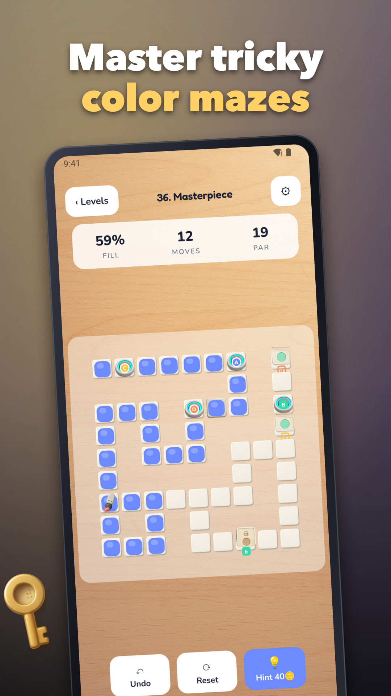

Path Painter: Paint Puzzle
Relaxing paint puzzle with maze painting and clever gate logic.



Paint puzzle fans will love Path Painter—a cozy, swipe-to-paint challenge where every move colors the board and unlocks smart gate logic. Glide your finger to create a continuous path, fill tiles, trigger switches, and sequence colors to open doors. Quick levels fit perfectly into your day, with optional timers for an extra kick and accessible palettes so everyone can enjoy.
How it plays
• Swipe to paint: smooth, grid-snapped strokes that feel great
• Unlock gates: fill the right colors or follow the shown order
• Tap switches, cross one-way tiles, and plan around crumble floors
• Beat goals like fill %, color order, and light time or move targets
• Earn stars and coins to unlock chapters and stylish brush trails
Designed for clarity and flow
• One-handed portrait play with simple touch controls
• Undo and reset anytime; optional hints when you need a nudge
• Colorblind-friendly palettes and patterned gates for readability
• Haptics and soft audio for a satisfying, zen vibe
Content and progression
• 60+ handcrafted stages at launch, from calm to clever
• Chapters introduce mechanics gradually—great for learning and mastery
• Daily Puzzle delivers a fresh handcrafted challenge and streaks
• Offline-friendly: enjoy most content without a connection
Challenge that respects your time
• Typical rounds last 30–90 seconds—perfect on the go
• Adaptive help after several retries so you keep moving forward
• Earn cosmetics with play; optional Remove Ads upgrade available
Why you’ll stay
• Smart sequences turn simple coloring into strategic flow
• Clean visuals make every completed board feel delightful
• Quick restarts invite experimentation and satisfying solutions
If you enjoy a thoughtful color fill game with silky swipes and tidy logic, Path Painter is for you. Try the first chapter, master the maze painting routes, and color your way to a perfect board today!
Support: jeets98e@gmail.com